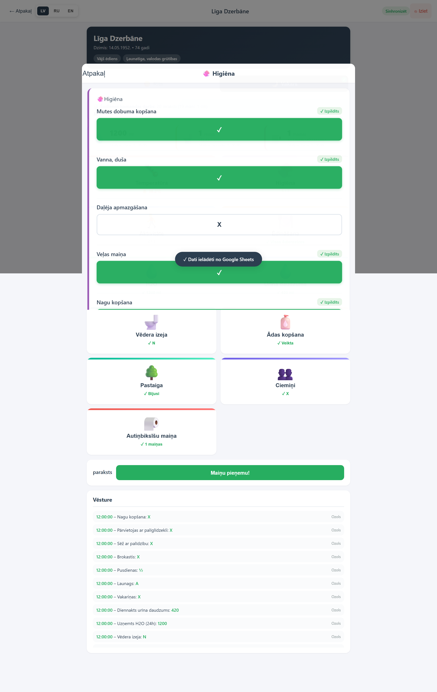
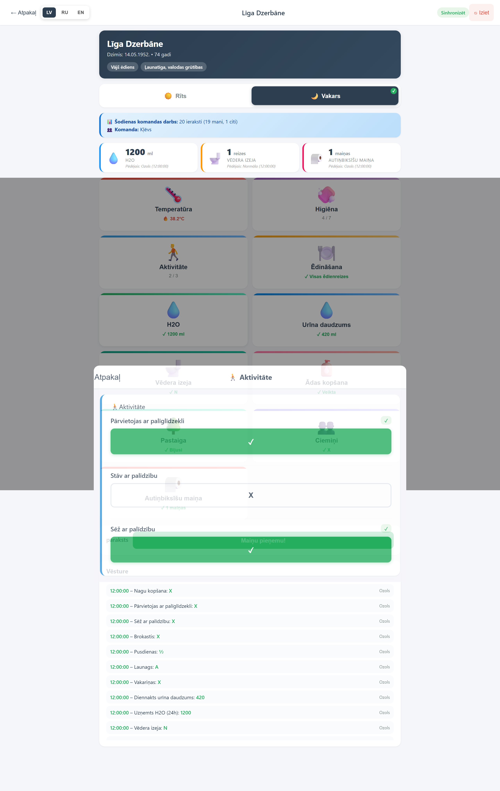
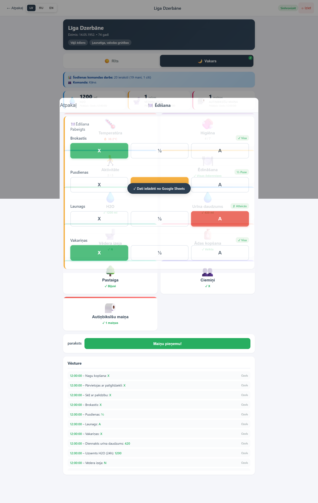
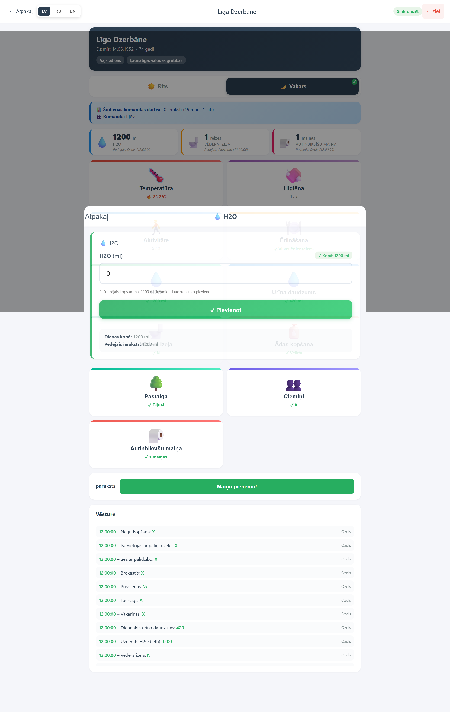
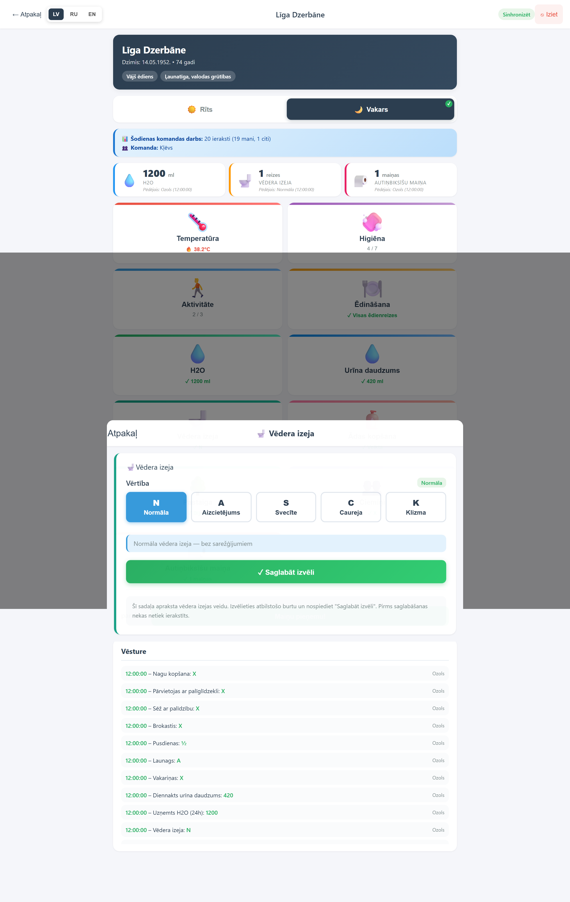
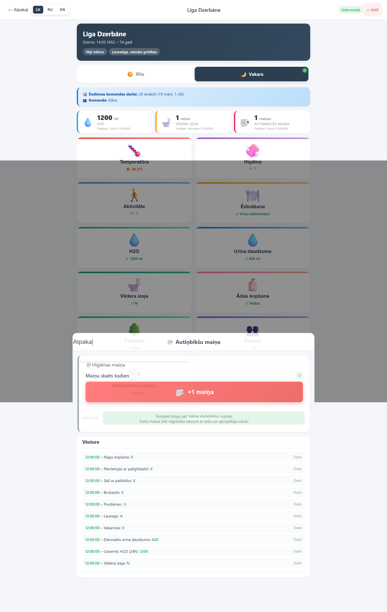
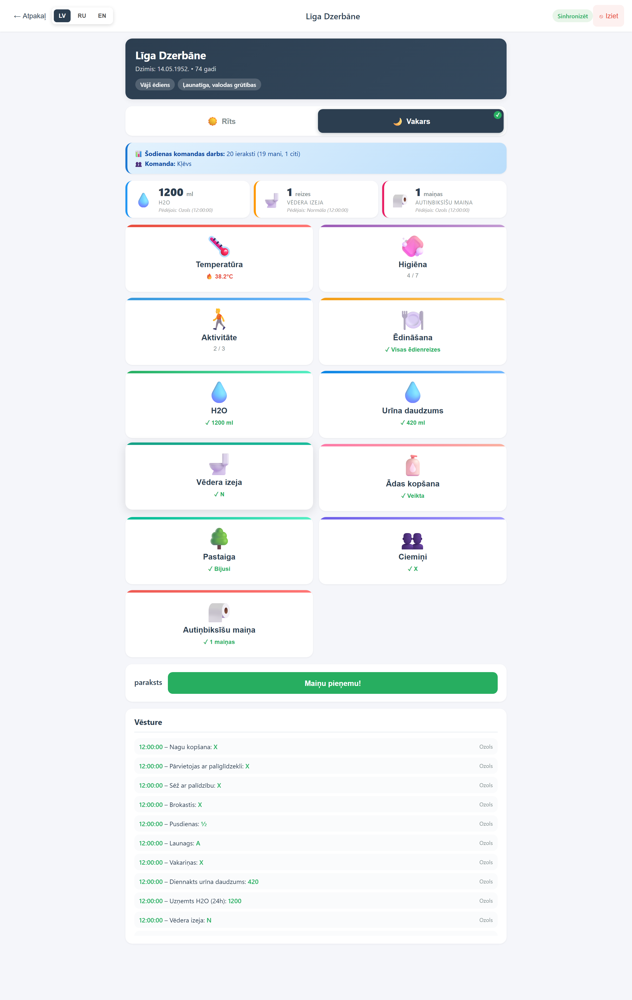

Atzīmējiet tikai tos, ko veicāt (X). Statuss parāda "X / 7".

4 no 7 punktiem atzīmēti
5.3 Aktivitāte

Pārvietošanās ar palīdzību — atzīmējiet, kas veikts
Pārvietojas ar palīdzekli
Stāv ar palīdzību
Sēž ar palīdzību
5.4 Ēdīšana
Katrai ēdienrezei: X (pilna), ½ (puse), A (attiecās).

Visas ēdienrezes aizpildītas
5.5 Šķidrumi (ūdens + urīns)

Ievadiet daudzumu ml — tas pieskaitās kopsavilkumam.
Klikšķiniet "💧 H2O" vai "💧 Urīna daudzums".
Ievadiet daudzumu mililitros (piemēram, 200).
Nospiediet "Pievienot".
Skaitļi sakrājas visā dienā.
5.7 Vēdera izeja

Izvelieties stāvokli pirms saglabāšanas.
Izvelieties vienu: N (normāla), A (aizcietējums), S (svecīte), C (caureja), K (klizma), tad "Saglabāt izvēli".
Līdz izvēlējoties vērtību, saglabātnes poga ir neaktīva.
5.8 Pārējās darbības
🧴 Ādas kopšana — atzīmējiet, ja veikta.
🌳 Pastaiga — atzīmējiet, ja bijusi.
👥 Ciemiņi — "Jā, bija" vai "Nē, nebija".
🧻 Autiņbiksu maiņa — klikšķiniet "+1" katru reizi.

6. Vienkārši par saglabāšanu
Ieraksti saglabājas automātiski pussekundu pēc ievades.
Saglabāts — kaste zaļa ar ✓.
“📜 Šodienas vēsture” parāda katru ierakstu ar laiku un autora vārdu.
7. Paraksts
Pēc visas aprūpes — nospiediet paraksta pogu lapas apakšā.

Aktīvā maiņa nav parakstīta — poga ir aktīva.
Pēc parakstīšanas poga zaļa ar ✓.
7.1 Kurš nevar parakstīt?
Ja kāds cits jau ir parakstījis šo Rītu vai Vakaru šim klientam, poga ir bloķēta. Nevar pārrakstīt — katram klientam vienā maiņā ir tikai viens paraksts.